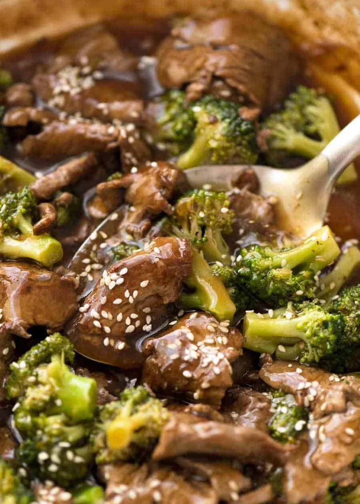

Chinese Beef and Broccoli
Home

Ingredients
Meat and Marinade
- 450 g (1 lb) boneless flank steak , skirt steak, or other cut
- 1 tablespoon soy sauce
- 1 tablespoon peanut oil (or vegetable oil)
- 1 tablespoon cornstarch
- 1/2 teaspoon baking soda (Optional)
Sauce
- 1/2 cup chicken stock (or beef stock)
- 2 tablespoons Shaoxing wine (or dry sherry)
- 2 tablespoons soy sauce
- 1 teaspoon dark soy sauce
- 2 teaspoons brown sugar (or white sugar)
- 1 tablespoon cornstarch
Stir Fry
- 1 head broccoli , cut to bite-size florets
- 1 tablespoon peanut oil (or vegetable oil)
- 3 garlic cloves , minced
- 2 teaspoons ginger , minced
Instructions
- Slice the beef against the grain into 0.5 cm (1/4 inch) thick slices or 1-cm (1/2 inch) sticks. Transfer to a small bowl. Add
soy sauce, peanut oil, and cornstarch (*Footnote 1). Gently mix well by hand until all the slices are coated with a thin
layer of sauce. Marinate for 10 minutes while preparing the other ingredients.
- Combine all the ingredients for the sauce in a medium-sized bowl. Mix well.
- Add 1/4 cup water into a large nonstick skillet over medium-high heat until the water begins to boil. Add the broccoli
and cover. Steam until the broccoli just turns tender and the water evaporates,1 minute or so. Transfer broccoli to a
plate. Wipe the pan with a paper towel held in a pair of tongs if there’s any water left.
- Add the oil and swirl to coat the bottom. Spread the steak in a single layer. Allow to cook without touching for 30
seconds, or until the bottom side is browned. Flip to cook the other side for a few seconds. Stir and cook until the
surface is lightly charred and the inside is still pink.
- Add the garlic and ginger. Stir a few times to release the flavor and fragrance.
- Return the broccoli to the pan. Stir the sauce again to dissolve the cornstarch completely and pour it into the skillet.
Cook and stir until the sauce thickens, about 1 minute. Transfer everything to a plate immediately. Serve hot as a main
dish.